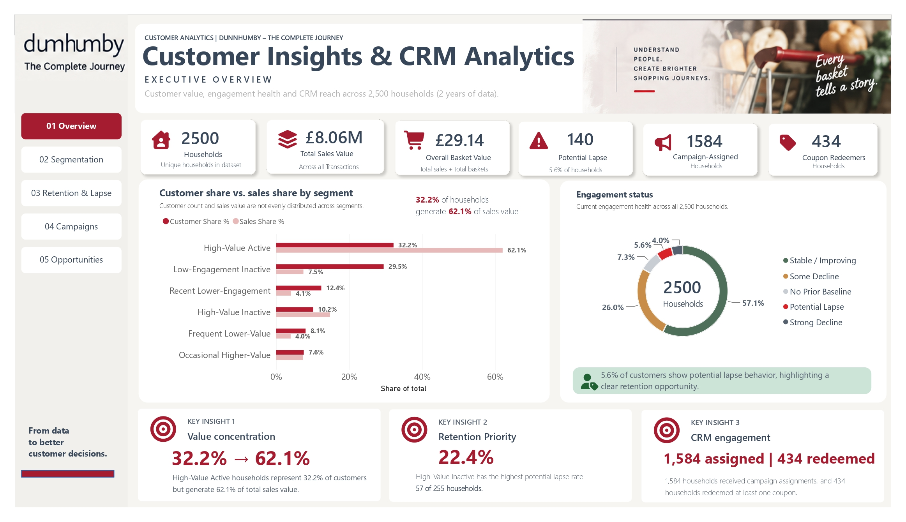
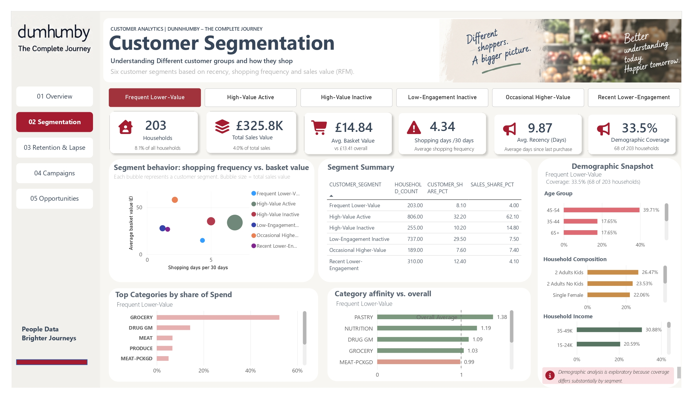
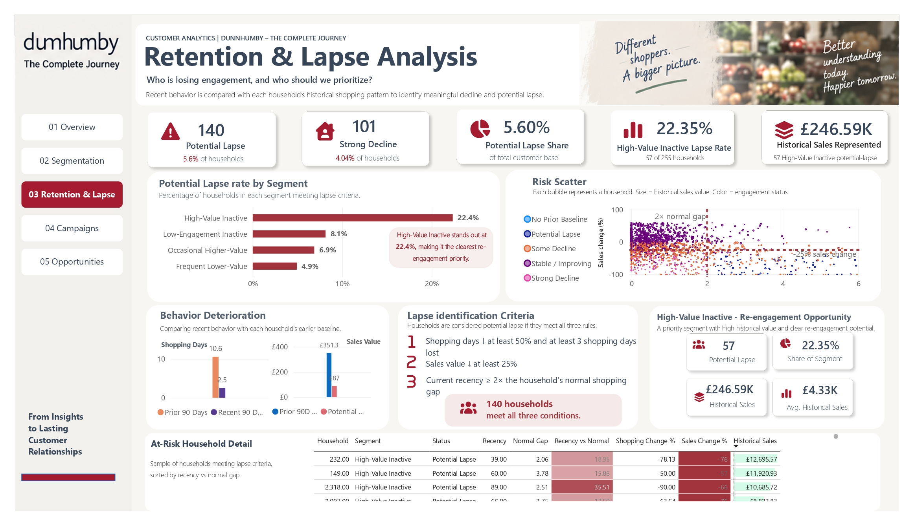
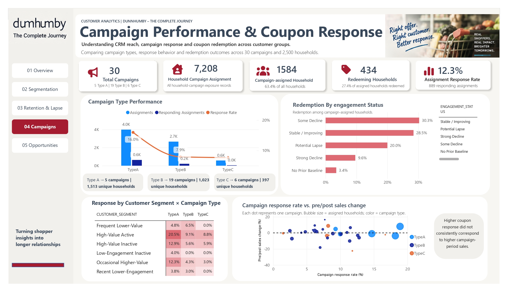
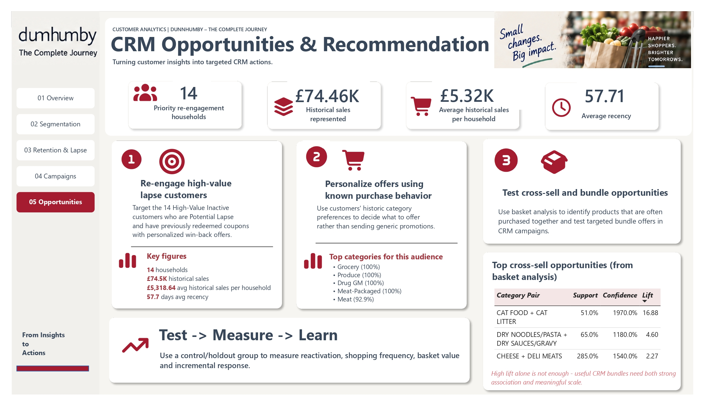

CUSTOMER ANALYTICS / CASE STUDY
Customer 360, Retention & CRM Analytics
Using customer transactions, segmentation and campaign history to turn behavioural data into a testable re-engagement recommendation.
A selected project case study. Figures are descriptive project findings unless explicitly stated otherwise.

The question
How can transaction and campaign data help identify valuable customers who may be disengaging, and suggest an audience for more targeted CRM testing?
The project uses the public dunnhumby “The Complete Journey” dataset, not live data from an employer.
Building the analytical foundation
I organised the data in Snowflake across three layers, allowing transformations and joins to happen before the reporting layer in Power BI.
- Raw source tables preserved transaction, product, household, campaign and coupon records.
- Staging transformed and cleaned records for analysis.
- Analytical tables supported Customer 360, RFM-inspired segmentation, behavioural decline, campaign performance and market-basket analysis.
- Five Power BI report pages explored value, engagement, retention and CRM opportunities.
What the analysis surfaced
The analysis also identified a proposed re-engagement audience of 14 historically valuable, lapse-signalling households with prior coupon-response history.
The 14-household audience is a proposed CRM test group. The project does not demonstrate that customers were contacted, retained or that a campaign produced incremental uplift.
Limits and next steps
- Historical customer behaviour is a risk signal, not proof of future churn.
- Coupon response is observational; measure incremental lift with a holdout/control design.
- Denominators, timing windows and currency conventions must be checked against the final project report before displaying additional numerical claims.
Project visuals
Selected outputs from the work, with the source materials and code linked below.
Each figure below includes the question it helps answer, what you are looking at and the conclusion or limitation worth noticing. Open the image at full size if you want to inspect individual labels.
The overview
What to look for
This opening page puts household value, shopping activity and customer mix in one place. It provides context before drilling down into individual segments or campaigns.
The takeaway: The dashboard is an exploration of the Complete Journey dataset, not a live view of a retailer’s customers.

Customer segmentation
Comparing six behavioural groups
The RFM-style segmentation page compares recency, shopping frequency, historical value and basket behaviour across six mutually exclusive household groups.
The takeaway: High-value households account for disproportionate historical sales: 32.2% of households contributed 62.1% of total sales in this analysis.

Retention and lapse
How lapse is identified
The dashboard compares behaviour across two 90-day windows. A household is flagged only when shopping activity and sales drop materially and recent activity is out of line with its typical shopping gap.
The takeaway: 140 households (5.6%) met the Potential Lapse rules. This is a behavioural warning, not proof that those households have churned.

Campaign and coupons
Reading response by campaign
Follow the campaign assignment and redemption views to compare response across campaign types and customer groups. Type A had a 16.0% observed response, while B and C were 7.9% and 7.7%.
The takeaway: Because the data does not establish random assignment, differences describe observed response rather than causal campaign uplift.

CRM opportunities
From pattern to potential action
This page narrows the analysis to high-value inactive households that are showing Potential Lapse and have redeemed a coupon previously.
The takeaway: The resulting 14-household audience is a starting point for a controlled re-engagement test, not an already proven intervention.
All screenshots are from my Power BI project based on the public dunnhumby dataset; recommendations are not measured marketing outcomes.